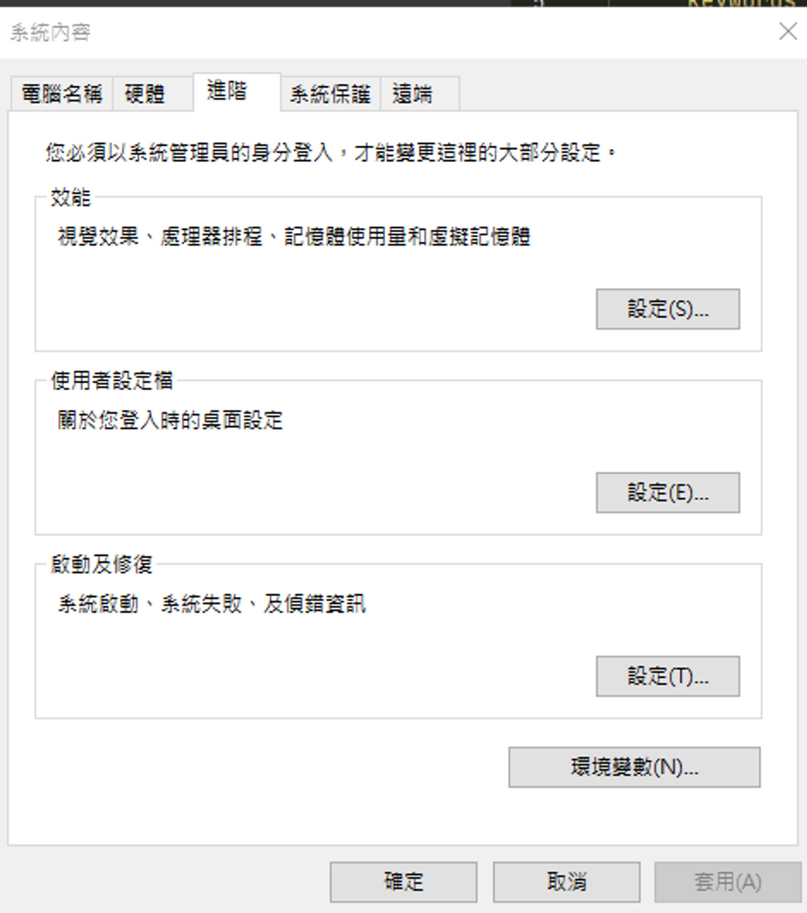
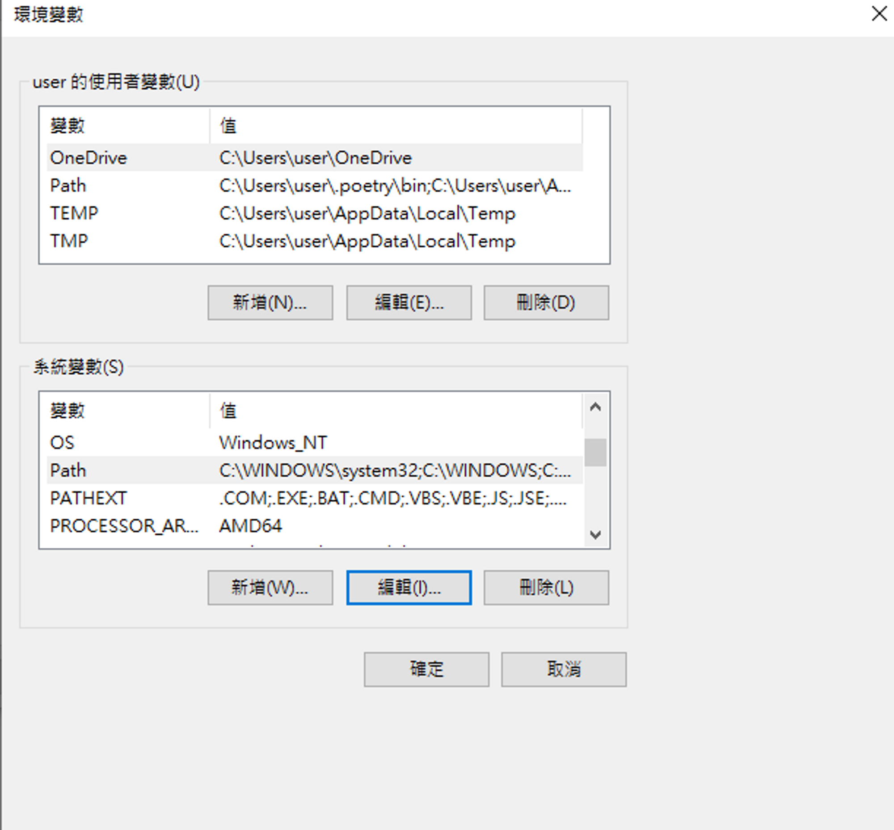
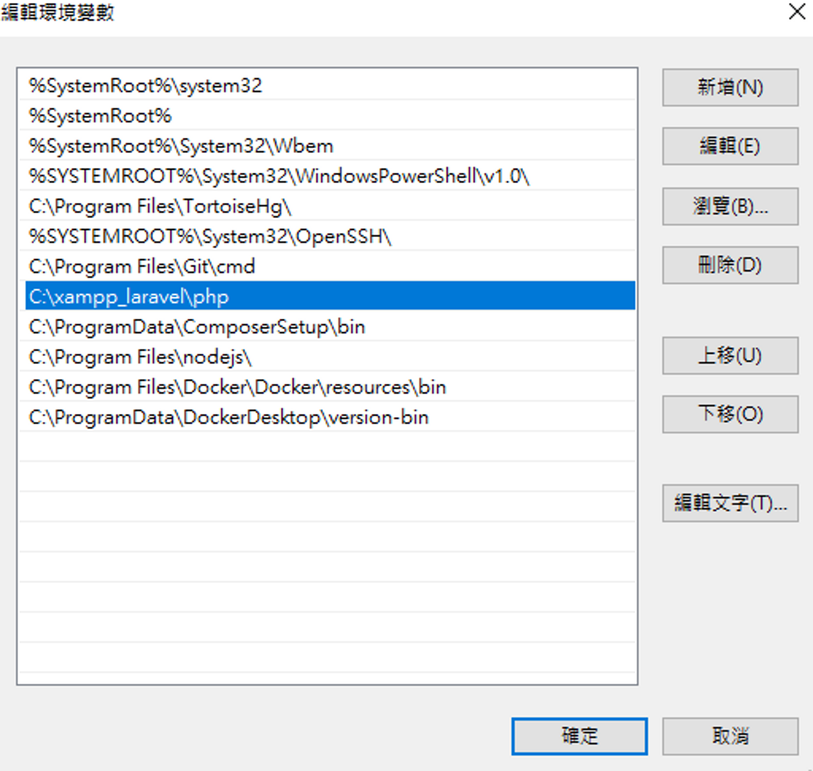
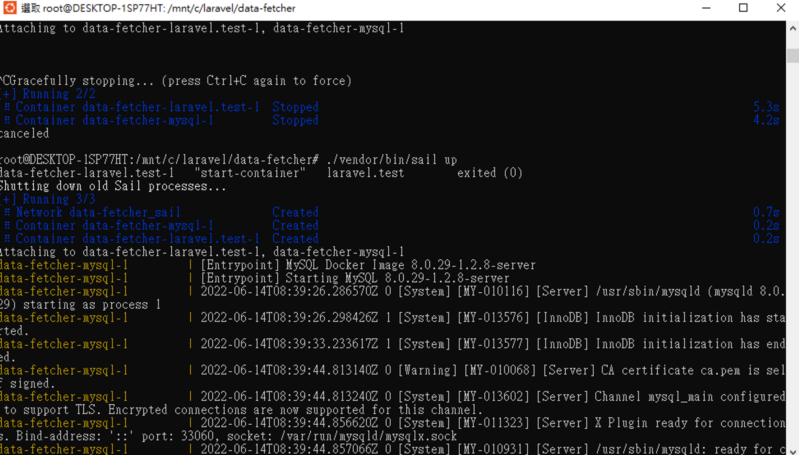

Laravel 常用指令
執行某個測試
使用環境是windows和xampp
- windows 查詢打 "環境變數" ，點擊 "編輯系統環境變數”
- 出現視窗如下，點擊環境變數

- 尋找系統變數的path，點擊 "編輯”

- 設定要升級的php路徑

laravel 在windows下用sail部屬
要使用sail，需在微軟商店下載Ubuntu，xsl2 透過以下連結下載
https://docs.microsoft.com/en-us/windows/wsl/install-manual#step-2---check-requirements-for-running-wsl-2
打開Ubuntu介面，在專案路徑下，執行laravel 官方文件步驟 ( c槽路徑 : /mnt/c )
官方文檔 : https://laravel.com/docs/9.x/sail

使用sail就不用裝apache和mysql，可以直接運行Laravel